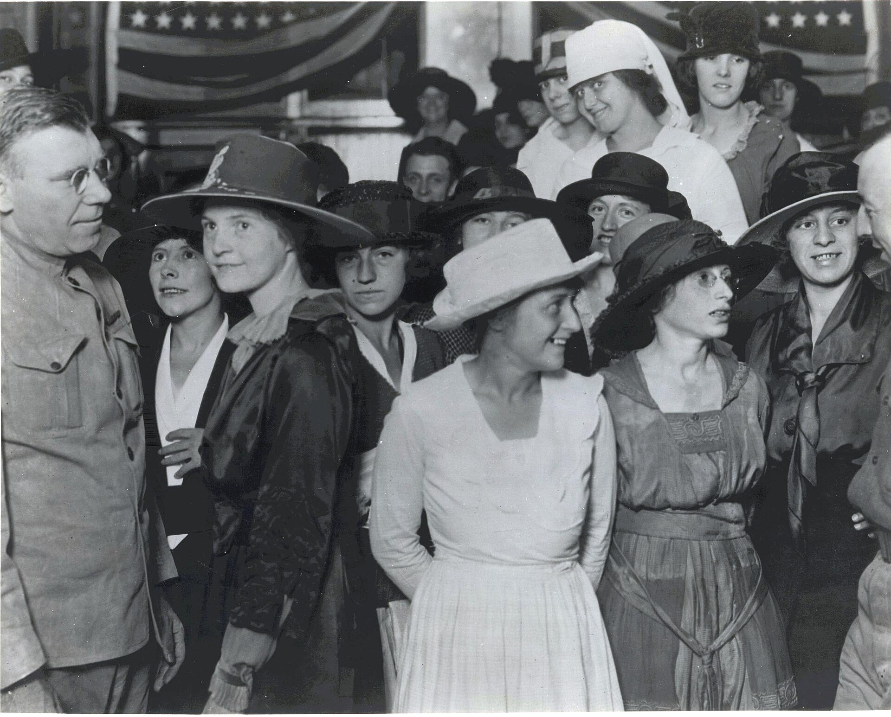

1900s–1910s
Edwardian Elegance
Wartime Transition

S-Bend Corset

Elmer Chickering (American, 1857-1915). Bianca Lyons, ca. 1902. B&w film copy negative. Washington,
DC: Library of Congress, cph 3b11241.
Designer unknown. Corset, 1900-1905. Figured silk, metal bones. Montreal: Musée McCord Stewart,
M968.7.59. Gift of Mrs. A. Murray Vaughan.
Gibson Girl - “Ideal Woman”

1900/06 “Gibson Girls” illustrated by Charles Dana Gibson
“Gentleman’s Tailor”

Artist unknown. The Gentleman's Tailor,
Fashions for Spring and Summer, 1914. New York: The Met,
The Costume Institute Fashion Plates. Gift of Woodman Thompson.
London Street Style - Edwardian Era (1905-1908)

Photographs by Edward Linley Sambourne, an illustrator and chief cartoonist of English magazine
Punch.
WW1 Uniforms

Collection of the National Museum of American History, Smithsonian Institution.
Burberry (British). Burberry Advertisement
1916, 1916. The Sphere.